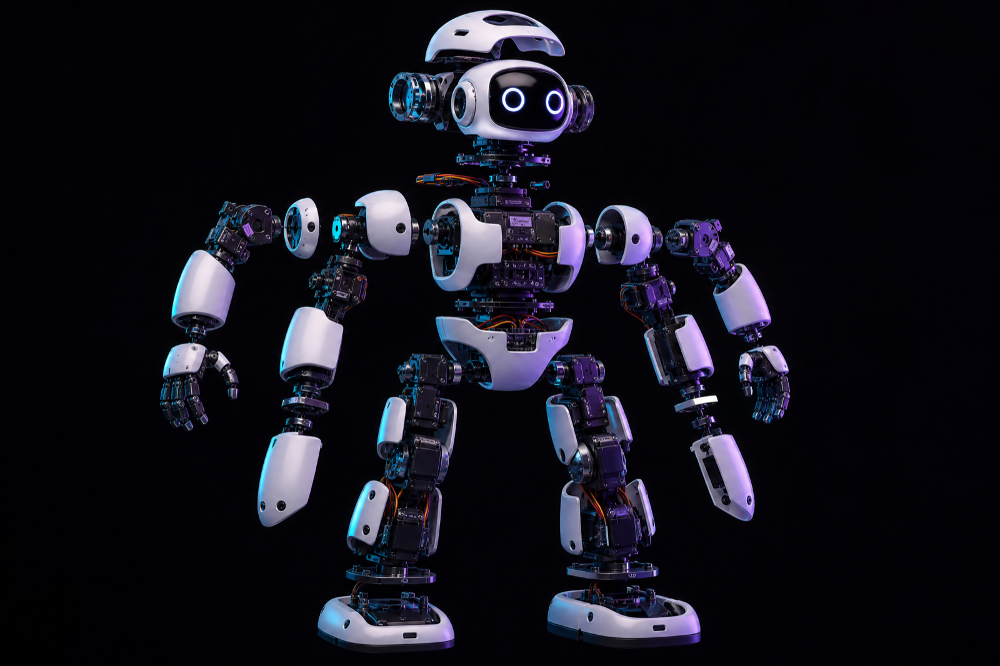

中国国际大学生创新大赛（2026）· 陕西赛区特色专项 · 人形机器人专项 · 小人形组
A.T.R.I.
桌面自主人形智能
Autonomous Tabletop Robotic Intelligence
一台机器人，跑完五项任务
全尺寸人形机器人体积大、价格高，本科教学难以大规模配置。
五大任务散落在不同平台，训练、演示和交接成本都很高。
成品竞赛套件上手快，但软件固定，二次开发与任务扩展困难。
统一描述任务与参数
多任务统一调度
动作 / 语音 / 视觉模块复用
检测 → 调整 → 再检测 → 执行
检测 → 特征 → 匹配 → 播报
识别 → 解码 → 按路径行走
检测 → 对齐 → 抓取 → 释放
定位 → 调整朝向 → 踢球
关键词 → 动作 → 语音 → 音乐
拔掉网线，任务继续。
人脸、二维码、语音、状态机全部在板载计算单元运行。
现场关闭网络后，识别、决策、控制与交互继续执行。
适合课堂、竞赛与实验室等敏感场景。
双腿 10 · 双臂 8 · 躯干 2 · 头部 2
桌面级紧凑尺寸，适合实验室与教室
复用实验室设备，低成本可复现

自组构型 + 实验室设备复用，样机预算约 ¥3600。
五项任务共享同一套软硬件，一机完成全部赛题。
任务卡化配置，课程、竞赛、二次开发都能复用。
机械结构 · 双足步态 · 舵机配置
系统集成 · 报名答辩
人脸识别 · 二维码 · 物体检测
状态机 · 离线语音 · 仿真环境
运动控制 · 硬件支持
合规构型 + 五项任务路线
预算 0–100 元跑通五项任务最小闭环
预算 0–500 元22 DOF 样机逐项联调
预算 1500–3500 元补强演示与训练数据
按经费 / 赞助追加Webots / PyBullet 先验证步态与视觉任务，不烧硬件盲试。
优先借用实验室双足平台，跑通最小闭环并录制证据。
设计、代码、测试、BOM 同步留痕，材料可追溯。